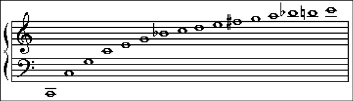
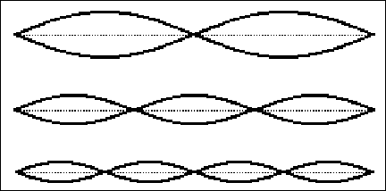
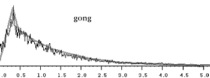
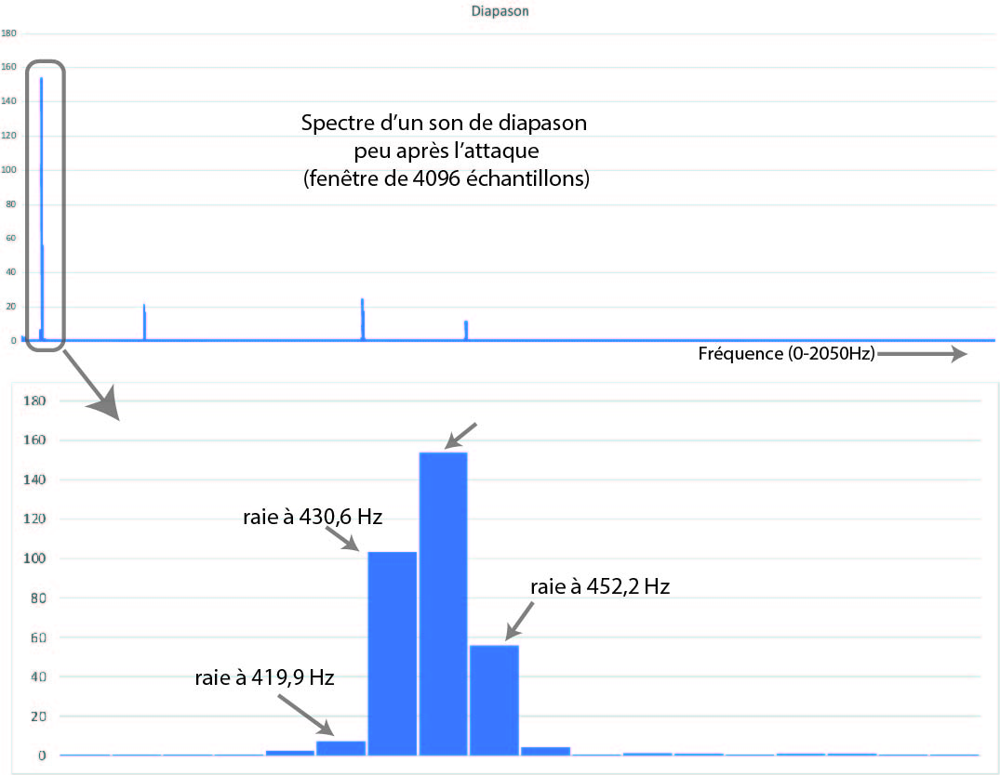
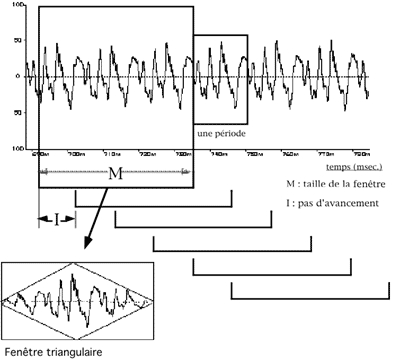
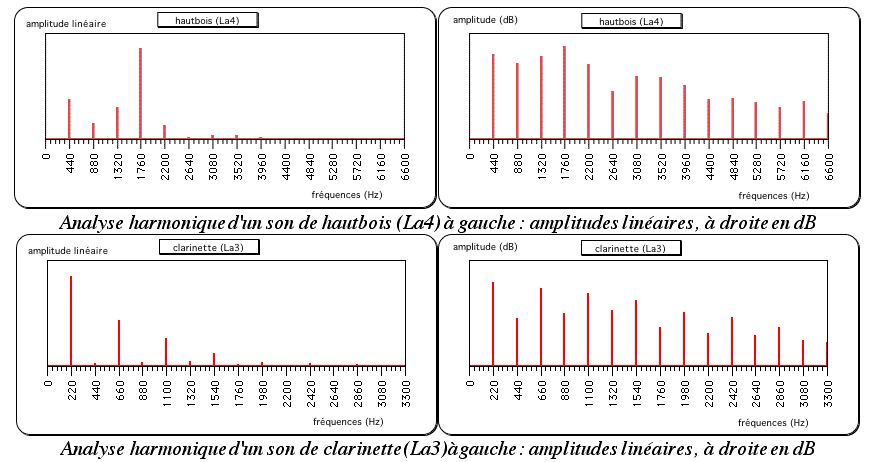

Représenter, classer et analyser les sons
Classer les sons
L’impulsion
Une impulsion (ou dirac) est un événement extrêmement bref, proche d’un clic. Une impulsion « idéale » possède un spectre uniforme contenant toutes les fréquences. Elle est notamment utilisée pour étudier la réponse acoustique d’un système ou d’une salle.
Le son pur
Un son pur est une sinusoïde de fréquence fixe. Le son d’un diapason s’en approche, sans être parfaitement pur.
Les sons harmoniques
Les partiels d’un son harmonique ont des fréquences multiples d’une même fréquence fondamentale. Ils produisent généralement une hauteur clairement identifiable.


Les sons inharmoniques
Les fréquences des partiels ne sont pas toutes des multiples d’une même fondamentale. C’est notamment le cas de nombreuses cloches, plaques et percussions.
Les bruits
Dans un bruit, les composantes sont trop nombreuses ou trop instables pour être entendues comme des partiels distincts.
Un bruit blanc contient en moyenne la même énergie par hertz. Un bruit rose contient davantage d’énergie dans les graves et présente une énergie moyenne constante par octave.
Trois représentations complémentaires
Forme d’onde
La forme d’onde montre l’évolution du signal dans le temps. Elle permet d’observer une période, une impulsion ou une enveloppe, mais elle renseigne peu directement sur le timbre.

À une échelle plus longue, on observe l’enveloppe :

Spectre
Le spectre montre les fréquences présentes pendant une courte portion du son et leurs amplitudes. Il constitue une sorte de photographie fréquentielle.

Sonagramme
Le sonagramme, ou spectrogramme, représente :
- le temps sur l’axe horizontal ;
- la fréquence sur l’axe vertical ;
- l’amplitude par la couleur ou la luminosité.

Le principe de l’analyse de Fourier
L’analyse de Fourier décompose une portion de signal en sinusoïdes de différentes fréquences, amplitudes et phases. On peut la comparer à un prisme qui décompose la lumière en couleurs.
La FFT (Fast Fourier Transform) est une méthode de calcul rapide de cette décomposition. Pour ce cours, l’important n’est pas son calcul, mais ce qu’elle permet d’observer.
Taille de la fenêtre
Une analyse porte toujours sur une durée limitée appelée fenêtre :
- une fenêtre longue distingue mieux les fréquences proches ;
- une fenêtre courte suit mieux les changements rapides ;
- il faut donc choisir un compromis entre précision temporelle et précision fréquentielle.

Les algorithmes de FFT utilisent souvent des fenêtres dont le nombre d’échantillons est une puissance de deux : 1024, 2048, 4096, etc.
Lire un spectre
Une raie correspond à une fréquence analysée. Un pic est une raie, ou un groupe de raies voisines, dont l’amplitude est plus importante.

Une estimation utilisant les raies voisines peut préciser la fréquence du pic :

Un partiel est une composante fréquentielle que l’on peut suivre dans le temps. Un harmonique est un partiel dont la fréquence est un multiple entier de la fondamentale. Un formant est une région du spectre dans laquelle l’énergie est renforcée.

Par exemple, dans une analyse simplifiée :
- le hautbois conserve de nombreux harmoniques élevés ;
- la clarinette présente souvent des harmoniques impairs dominants dans son registre grave ;
- la flûte possède généralement un spectre plus pauvre en harmoniques élevés.
Vers le son numérique
La forme d’onde analysée par l’ordinateur est représentée par une suite de nombres. Le passage d’un signal continu à cette représentation met en jeu l’échantillonnage et la quantification. Ces opérations, ainsi que leurs limites (fréquence de Nyquist, aliasing et bruit de quantification) sont étudiées dans la séance suivante.
À retenir
- Un son peut être pur, harmonique, inharmonique ou bruité.
- Forme d’onde, spectre et sonagramme donnent des informations différentes.
- La FFT permet de passer d’une description temporelle à une description fréquentielle.
- Une fenêtre longue améliore la précision fréquentielle mais réduit la précision temporelle.
- Le son numérique représente la forme d’onde par une suite de nombres.